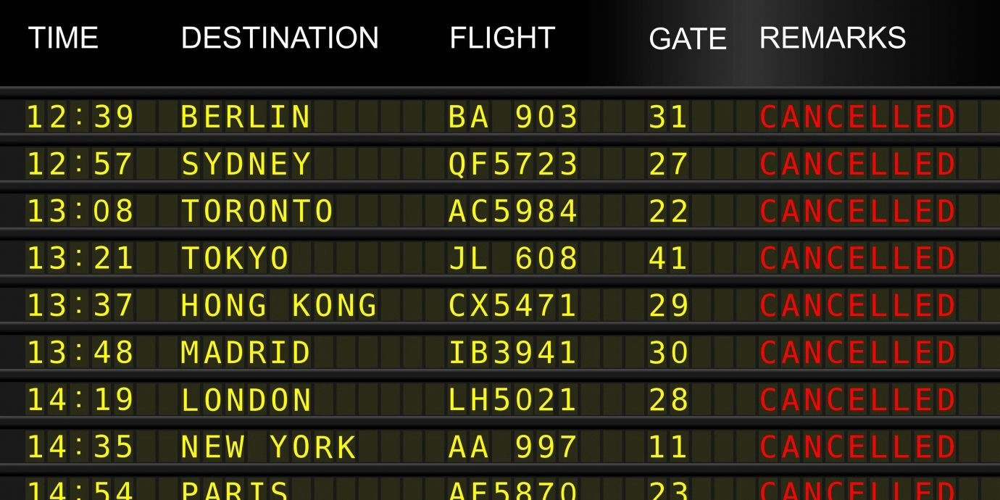

Atraso e Cancelamento de Vôos

Bruna Goncalves
Quem nunca foi obrigado a ficar no aeroporto durante horas, dias ou semanas, ou no mínimo, não conhece alguém que já passou por isso?

Infelizmente, esse tipo de situação é muito usual, e os motivos utilizados pelas Cias Aéreas para se justificarem são dos mais variados...
Contudo, ainda que o atraso ou cancelamento seja decorrente de culpa da Cia Aérea, em recente decisão proferida pela Terceira Turma do STJ, decidiu-se que o mero atraso ou cancelamento de voo, por si só, não acarretam em dano moral.
É Dano Moral ou Não?
“atraso ou cancelamento de voo, por si só, não acarretam em dano moral.”
Preste atenção aqui: A verificação do dano moral decorre de particularidades a serem observadas, como por exemplo, o tempo que a Cia Aérea levou para solucionar o problema, se ofereceu alimentação e/ou hospedagem e demais suportes, se prestou informações claras, se o passageiro perdeu compromisso inadiável no destino, entre outras hipóteses.
Desta forma, a indenização por dano moral só é devida, se ficar comprovada a ocorrência de algum fato extraordinário que provoque grave abalo psicológico ao consumidor.
Faça Registros
“a importância de se fazer os devidos dos danos causados, seja por conta do cancelamento ou atraso de voo.”